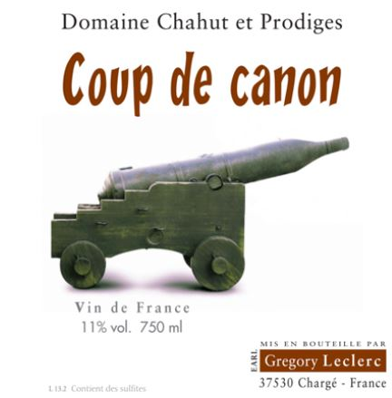

-------------------------------------------------------
-------------------------------------------------------
-------------------------------------------------------
The Awkward Quest for a Funky Natural Red Wine
By Adam Aslan
An awkward question is posed, “hey...there...I'm looking for a ...natural wine...something funky...that isn’t going to cost over twenty five dollars?”
If you are like me, then your normal speaking voice is ridden with pauses so as to humbly point out a lack of certainty. When it comes to the trendy movement of natural wines, one could say the whole movement should be speaking in such a tone. A movement that is clearly going to gain steam in 2019, natural wines do not come with a certification one has to pay for like a wine that is certified organic or biodynamic for example. Thus, the definition of “natural” remains shrouded in mystery and very much open to interpretation.
While the question of what makes a wine natural is clearly an interesting one, another great question is: why is everybody freaking out over natural wines? There are several good answers to that question. You could answer that question by mentioning all the nods to minimalism that comes with natural wine like the lack of and or minimal use of sulfites, lack of advanced technology, or lack of filtration. Another way you could answer that question would be to mention how natural wine uses old school techniques that have been tried and true for thousands of years of wine making history. Oh and let us not forget about all the cool labels they come with, boutique distributors, specialized stores, and fancy restaurants all dedicated to natural wine. However, none of these are the best reason to freak out about natural wine in my humble opinion.
What is the best reason? The unique funky taste. When I awkwardly asked an employee at Irving Bottle, located at 155…Irving Ave (who would have guessed with the name of the store having Irving in it???) in Bushwick Brooklyn, if they had a funky yet affordable natural red, I was delighted to find out that this neighborhood gem did indeed carry an array of such wines. The wine they suggested to me was the Coup de Canon produced by Gregory Leclerc of Domaine Chahut et Prodiges located in the Loire Valley.

Coup de canon is a glorious natural red wine grown from a 60 year old grolleau vine. While grolleau is typically known for its light body that goes well in making rose, this wine has the light body but the darker coloration that is quite indicative of a lack of filtration in the wine making process. Coup de canon combines a tart wild berry taste with herbaceous notes that make this a vibrant red wine loaded with the freshness of a recently bottled natural wine. Many note the lack of character that comes from the grolleau grape, but let me just say that is not the case here; while the quantity of body may be low, the quality of the body is quite high.
In a sad yet possibly not so sad note, I bought a bunch of this wine because it apparently is going up in price and no longer being sold at Irving Bottle after changing from the Manhattan based T Edward Wine distributors to the Bushwick based Zev Rovine. Get it while it lasts at this bargain price point. C’est la vie.